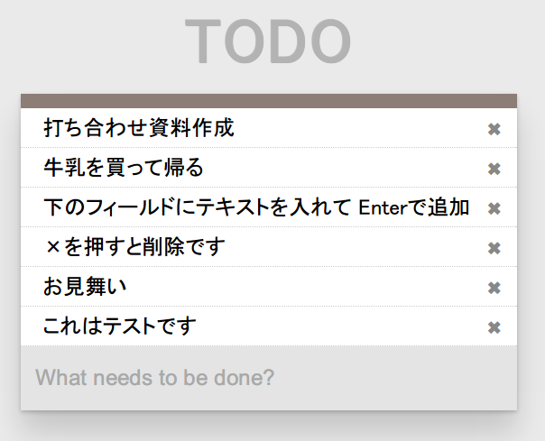
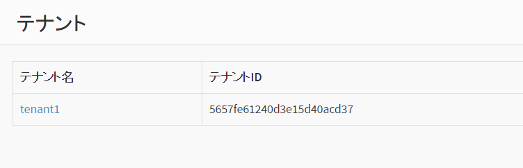
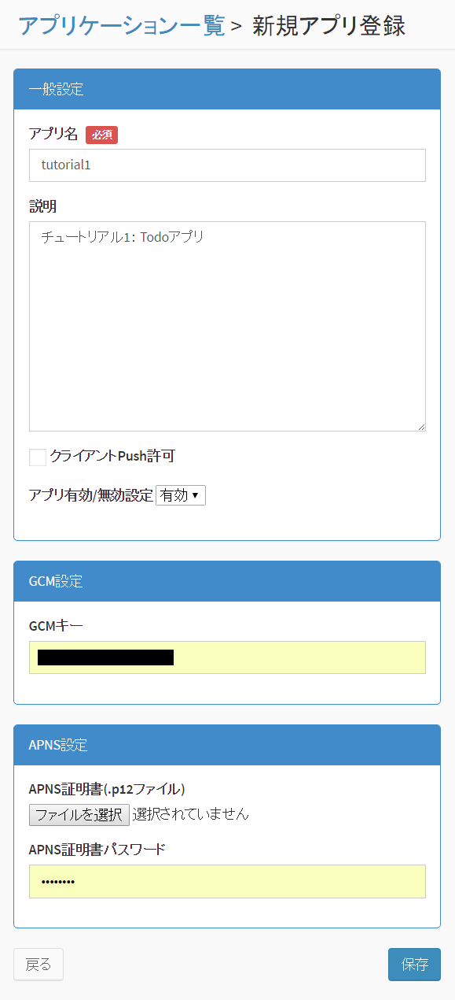
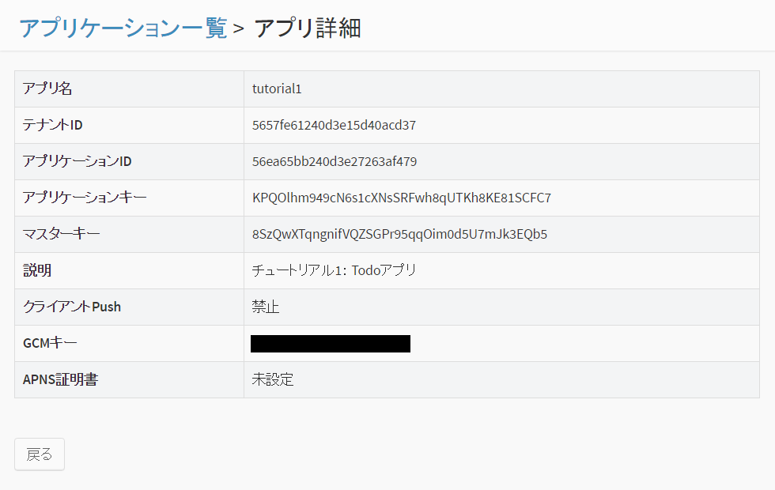
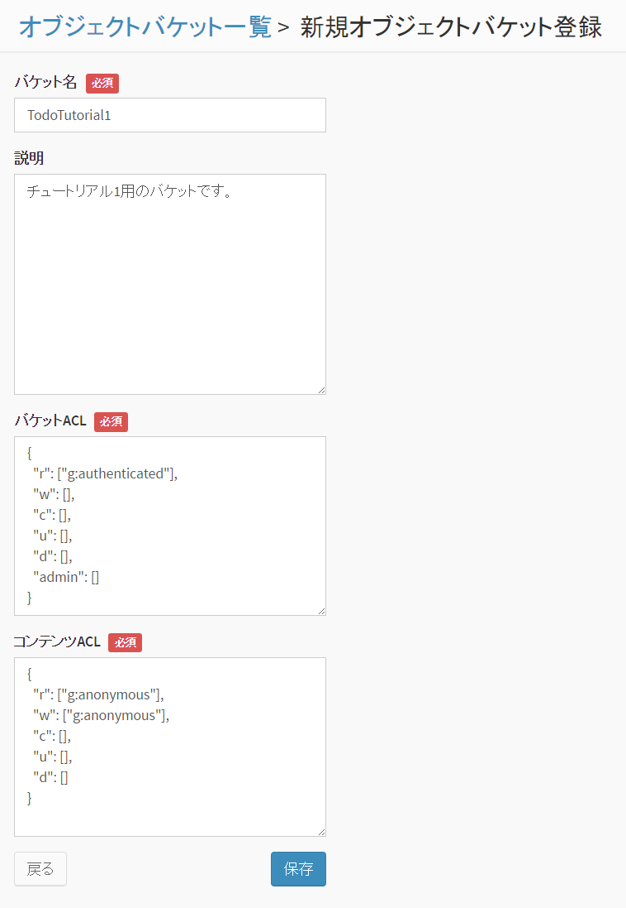

2. チュートリアル1 : TODOアプリ¶
最初のチュートリアルでは、JavaScript SDK を使用して簡単な Todo アプリ(Web アプリ)を作成します。
{kind=link}
- Todo 項目を入力して追加したり削除することができます。
- データは BaaS サーバ上に保存されます。データは JSON で表現し、BaaS サーバの「オブジェクトストレージ」に格納されます。
- 本アプリはブラウザ上で動作する Web アプリで、HTML + JavaScript のみで作成します。
なお、本チュートリアルでは、単純化し理解しやすくするため、ユーザ認証やアクセス制御は一切 行いません。ユーザ認証を行うチュートリアルは、チュートリアル2以降を参照してください。
2.1. 新規アプリケーションを作成¶
まず、BaaS サーバのデベロッパコンソールにログインし、新規アプリケーションを作成します。
ブラウザを開き、デベロッパコンソールにアクセスし、 ID とパスワードを入力してログインしてください。

ログインが完了すると、テナント名の一覧が表示されます。ここに表示されている テナントID は後ほど使用しますので、メモしておいてください。
使用するテナントをクリックします。
「アプリケーション」をクリックし、「追加」ボタンを押して新規アプリケーションを作成します。
ここではアプリ名と説明文を上記のように入力します。
アプリの作成が完了すると、アプリの詳細情報が表示されます。 ここで表示される「アプリケーションID」「アプリケーションキー」は アプリケーションの認証に使用する秘密情報です。 この２つは後ほど使用しますので、メモしておいてください。
2.2. バケットの作成¶
Todo 情報を格納するための「バケット」を作成します。
画面左の「オブジェクトバケット」⇒「追加」をクリックして、バケットを追加します。
バケット名は "TodoTutorial1" としてください。
また、バケットのアクセス権限を変更し、誰でも(anonymousユーザ)バケットを読み書きできるようにします。 (デフォルトでは、認証ユーザしかバケットを読み書きできないようになっています）
「コンテンツACL」の r と w の行が "g:authenticated" となっていますので、 これを "g:anonymous" に変更して保存してください。
2.3. サンプルコードの変更¶
チュートリアル1のサンプルコードを設定し、実際に動作させてみます。
チュートリアルの tutorial1/js/ ディレクトリにある config.sample.js ファイルを config.js という名前でコピーし、 以下のように変更します。
var NebulaConfig = {
"tenant": "5657fe61240d3e15d40acd37",
"appId": "56ea65bb240d3e27263af479",
"appKey": "KPQOlhm949cN6s1cXNsSRFwh8qUTKh8KE81SCFC7",
"baseUri": "https://api.example.com/api",
"offline" : false,
"debugMode": "debug"
};
- tenant には テナントIDを設定してください。
- appId にアプリケーションIDを設定してください。
- appKey にアプリケーションキーを設定してください。
- baseUri には、BaaS サーバの API URL を指定してください。パスの "/api" まで必要です。
- offline を false にしてオフライン機能を無効してください。
- debugMode を "debug" に設定すると、JavaScript コンソールにデバッグログが表示されます。デバッグログを出したくない場合は "release" に設定してください。
2.4. サンプルの実行¶
tutorial1/index.html を Firefox, Chrome などのブラウザで開いて実行してください。
注意
CORS (Cross Origin Resource Sharing) に対応していないブラウザでは動作しません。 具体的には Internet Explorer 9以下では動作しません
下のフィールドにテキストを入力して Enter キーを押すと TODO が追加されます。 「×」ボタンを押すと消去されます。
データは BaaS サーバに保存されますので、ブラウザを再起動したり 他のクライアントからアクセスしても、入力したデータを参照することができます。